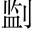

臣聞鄙語曰：「見兔而顧犬，未為晚也；亡羊而補牢，未為遲也便引喻起。。」臣聞昔湯、武以百里昌，桀、紂以天下亡。今楚國雖小，絕長續短，猶以數千裡，豈特百里哉楚襄王寵信倖臣，而不受莊辛之言，及為秦所破，乃徵莊辛與計事。莊辛起手極言未遲未晚是正文，以下一路層層遞接而去，俱寫遲晚也。？
王獨不見夫蜻精。蛉陵。乎蟲名，一名桑根。？六足四翼，飛翔乎天地之間，俛同「俯」。啄蚊虻萌。而食之，仰承甘露而飲之，自以為無患，與人無爭也；不知夫五尺童子，方將調飴膠絲飴，米櫱所煎，調之使膠於絲。，加己乎四仞之上八尺曰仞。，而下為螻蟻食也遲矣，晚矣。。
夫蜻蛉其小者也，黃雀小鳥。因是以。俯噣同「啄」。白粒，仰棲茂樹，鼓翅奮翼，自以為無患，與人無爭也；不知夫公子王孫，左挾彈，右攝丸，將加己乎十仞之上，以其類為招以其類而招誘之。。晝遊乎茂樹，夕調乎酸醎，倏忽之間，墜於公子之手遲矣，晚矣。。
夫雀其小者也，黃鵠鴻也，水鳥。因是以。遊乎江海，淹乎大沼，俯噣鱔鯉，仰囓孽。䔖同「蔆」。衡作蘅。○衡，香草。，奮其六翮翮，勁羽。，而淩清風，飄搖乎高翔，自以為無患，與人無爭也；不知夫射者，方將修其碆波。盧碆，石為弋鏃。盧，黑弓。，治其矰繳酌。○矰，弋射矢。繳，生絲縷。，將加己乎百仞之上四仞、十仞、百仞，逐漸增加，逼起後段。亦見處地愈高，其勢愈危之意。，被監。磻同「碆」。○被，著也。，引微繳，折清風而抎，利也。矣。故晝遊乎江湖，夕調乎鼎鼐同「隕」。。
夫黃鵠其小者也，蔡靈侯之事因是以。南遊乎高陂披。○陂，阪也。，北陵乎巫山陵，登也。，飲茹溪流茹，飲馬也。，食湘波之魚湘水，出零陵，屬長沙。，左抱幼妾，右擁嬖女，與之馳騁乎高蔡之中即上蔡。，而不以國家為事；不知夫子發方受命乎靈王，系己以朱絲而見之也魯昭十一年，楚子誘蔡侯般殺之於申，蓋使子發召之。○遲矣，晚矣。。
蔡靈侯之事其小者也層注而下，至此已到。，君王之事因是以。左州侯，右夏侯，輦連上聲。從鄢陵君與壽陵君四人皆楚倖臣。州侯、夏侯，常在左右；鄢陵、壽陵，輦出則從。，飯反。封祿之粟封祿，所封之祿。，而載方府之金方，四方。金，其所貢也。，與之馳騁乎雲夢之中雲夢，澤名。，而不以天下國家為事，而不知夫穰侯秦相魏冉。方受命乎秦王昭王。，填黽萌。塞之內填者，取其地而塞之。黽塞，江夏鄳縣。，而投己乎黽塞之外至此則遲矣、晚矣，今則未為遲也，未為晚也。妙在說到此竟住，若加一語，便無餘味。。
只起結點綴正意，中間純用引喻，自小至大，從物及人，寬寬說來，漸漸逼入，及一點破題面，令人毛骨俱竦。《國策》多以比喻動君，而此篇辭旨更危，格韻尤雋。